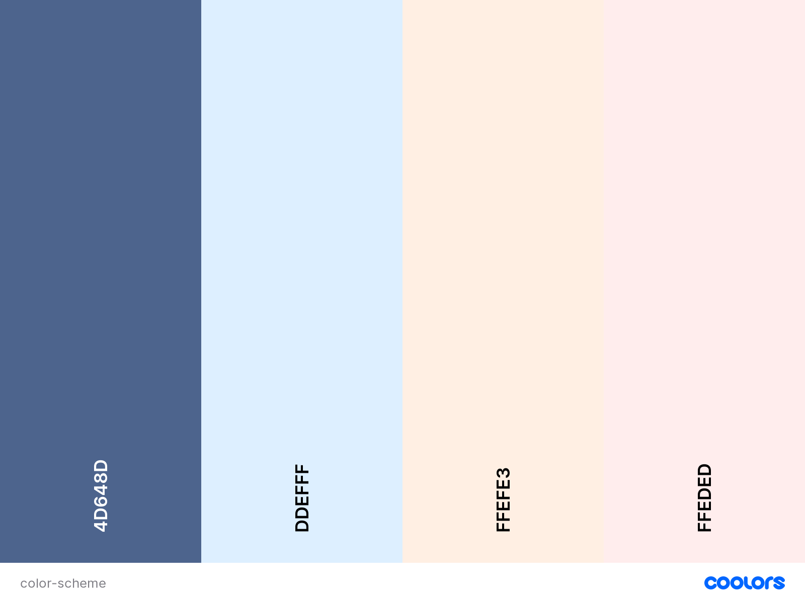
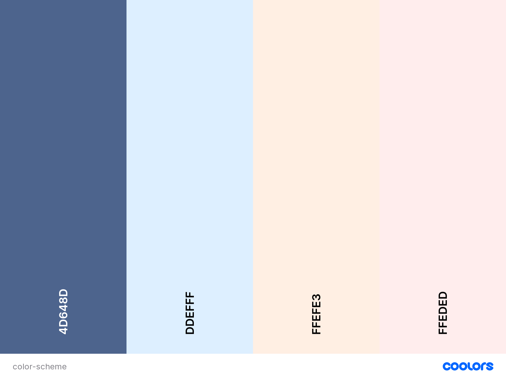

Color Scheme
For my color scheme, I have chosen colors that represent a palette of soft sunset tones. Then I've chosen a Queen Blue for my borders and text. The sunset tones are utilized as a background gradient.

Weatherbird
Site Plan
For my color scheme, I have chosen colors that represent a palette of soft sunset tones. Then I've chosen a Queen Blue for my borders and text. The sunset tones are utilized as a background gradient.
